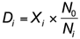
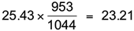
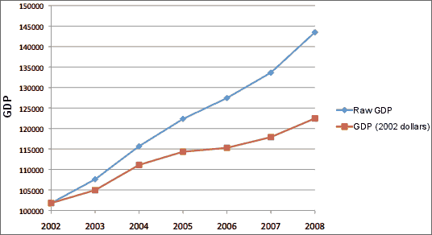

Other adjustments of time series
Many time series are affected by more than one variable changing over time. The influence of an ancillary variable can be removed with an index that summarises its effect. If Xi denotes the time series value and Ni is the index for the ancillary variable, the ancillary variable's effect can be removed by:

This is called deflating the series.
Correcting for inflation
The Consumer Price Index (CPI) is often used to adjust for inflation. If the CPI was 953 in 2005 and 1044 in 2008, the price of an item in 2008 ($25.43) can be expressed in "2005 dollars" as:

Prices usually change much less over time in 'constant dollars' than in raw dollars.
